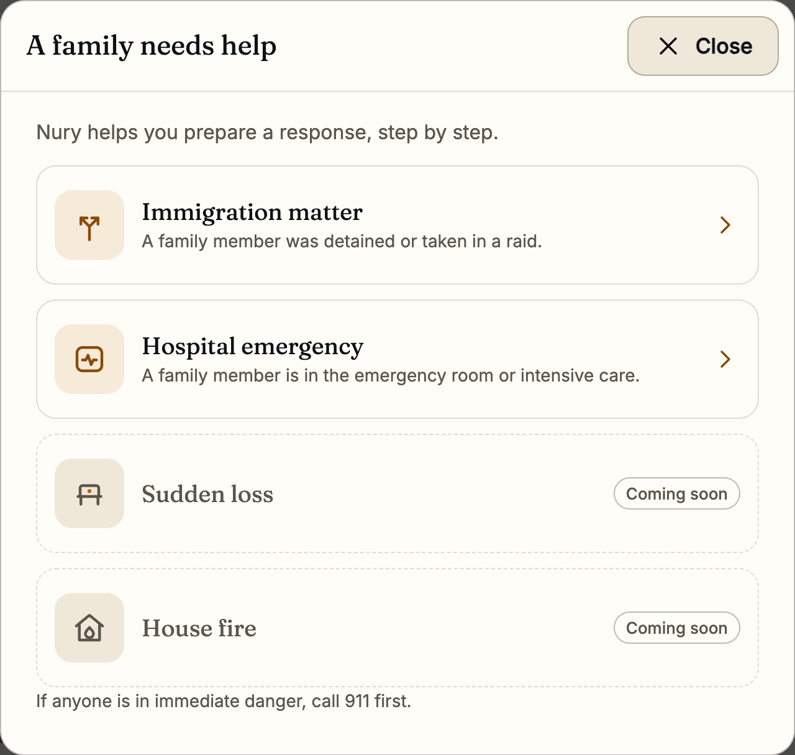
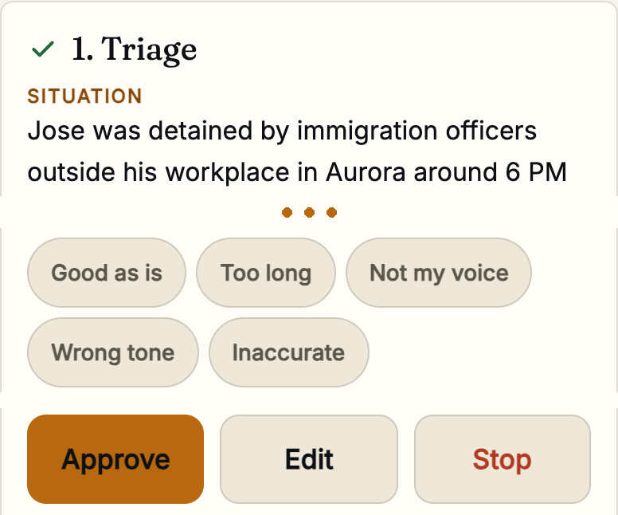
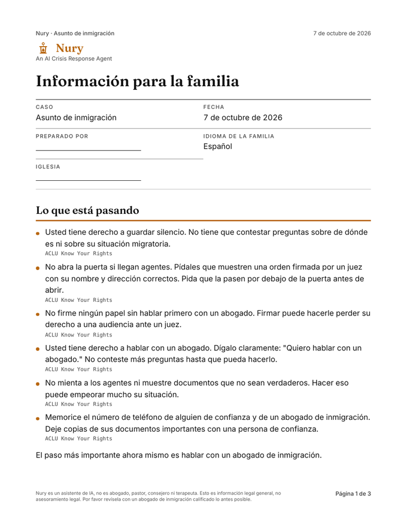
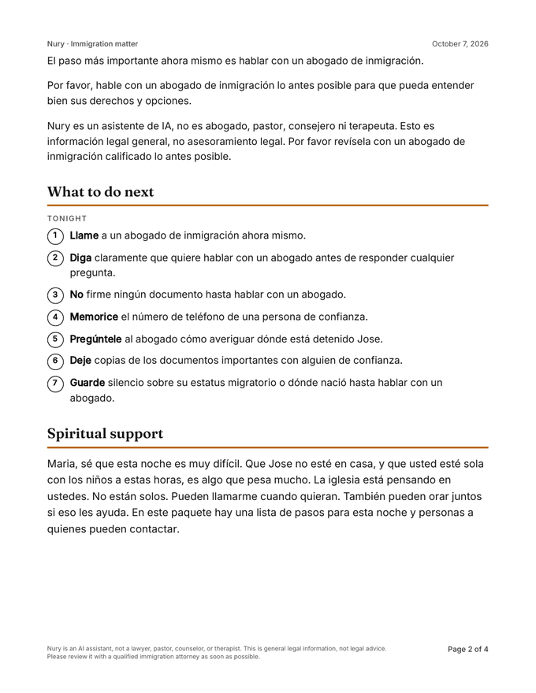
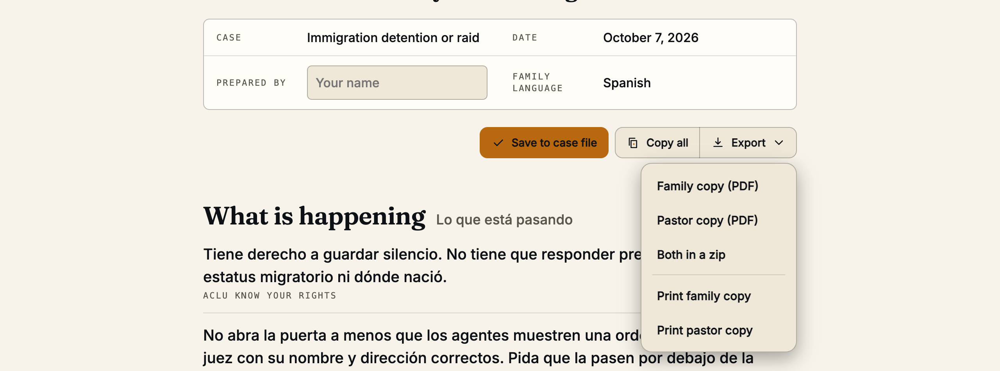

01 · The call
2:07 AM. A pastor's phone rings.
A husband was detained last evening. The family needs help now.
no lawyer on the line

01 · The call
A husband was detained last evening. The family needs help now.
no lawyer on the line
02 · The name
An AI Crisis Response Agent.
A given name from Arabic nur, light.
see also: lantern
03 · Why it matters
One line of context goes here.
one aside
03 · The product
Each crisis has its own stages. Two run today.
two live, two coming
The pastoral message carries a Bible verse, quoted from a verified list.

Immigration: Triage, Rights brief, Attorney resources, Family checklist, Pastoral message
Hospital: Triage, Family brief, Hospital resources, Family checklist, Pastoral message
04 · The demo
Nothing moves on without the pastor. Nothing is sent.
a made-up family

How this case went
05 · What the family gets
A PDF the pastor can hand over.
the pastor reads every line first


06 · Built to grow
Add a folder, not engine code. Rules and tests are files too.
two crises run on it
Playbooks share small skills, like voice and grounding. A stage includes them by name.
playbooks/detention/ ├─ playbook.json the crisis ├─ stages.json the stages ├─ outcomes.json outcomes ├─ prompts/ one per stage └─ sources/ vetted only
07 · How it is built
Only tokens reach Gloo AI Studio. The pastor decides every stage.
Inside Nury, except one step
Names are put back only inside Nury. Nothing is sent by Nury: the pastor copies the text and sends it by hand.
names stay inside Nury
Gloo for the model, YouVersion for exact Scripture text; only tokens and a verse reference leave the app.
08 · Use of AI
Other models reviewed it once, before release.
While a pastor uses it
Before release · never at run time
09 · The evaluation system
One builds the prompts. One checks every draft.
Before release · by hand · 46 test cases
Jev works in both.
While a pastor uses it · Jev answered 239 of 239 calls
10 · Impact
Judge results, not human verdicts. Made-up families only.
Immigration · 20 cases
Hospital · 8 cases
Hostile intakes · 18 cases
11 of 18 hostile intakes stopped at triage. We changed the triage prompt. None did on the final build.
The Jev decision API from TypeSafe is used as typed judges in our evaluation harness and as a run-time draft classifier; disclosed as third-party technology per the rules.
11 · What we built
One founder. Five AI agents. Every step is in the commit log.
Layer 1 · Crises
Each crisis is a folder of plain files.
Layer 2 · The agent
Plain Python. No agent framework.
the agent is the engine
Layer 3 · Connected to
Layer 4 · Around it
05 · So what
One line of closing logic goes here.
one aside
12 · Close
An AI Crisis Response Agent.
The next call will come. Nury is there when the pastor picks up.
Nury is an AI assistant, not a lawyer, pastor, counselor, or therapist. This is general legal information, not legal advice. Built in Boulder, Colorado, during the Gloo AI Hackathon, October 6 to 8, 2026. Every step is in the build log.
In memory of Tía Nury
08-2026

Red team before release only. Jev at run time and test time.
Before release only
Run time and test time
Nine of fifteen items on the What did not work page.
239 of 239 calls answered in the scored runs.
Built, off by default. Nothing learned yet.
Before release, never at run time.
Names become tokens before any model request.
Family copy and pastor copy, as PDF or a zip.

Nury lists vetted contacts. It never endorses anyone.
Six functions from the NASW standards.
Nury is a drafting aid, not a professional case-management system. No standards body has endorsed it.
Routine church tools and Nury cover different moments.
Routine
Planned, repeated work and rest.
Crisis
The unplanned crisis call, often at 2 AM.
Photos, fonts, Scripture, voice and technology.
No real people or children appear. No agency imagery. Details: branding/IMAGES.md.
Slides (g to close; G gated; Space or Right: next step, then next slide; Left: back one step; a: AUTO; n: notes; f: hide footer)